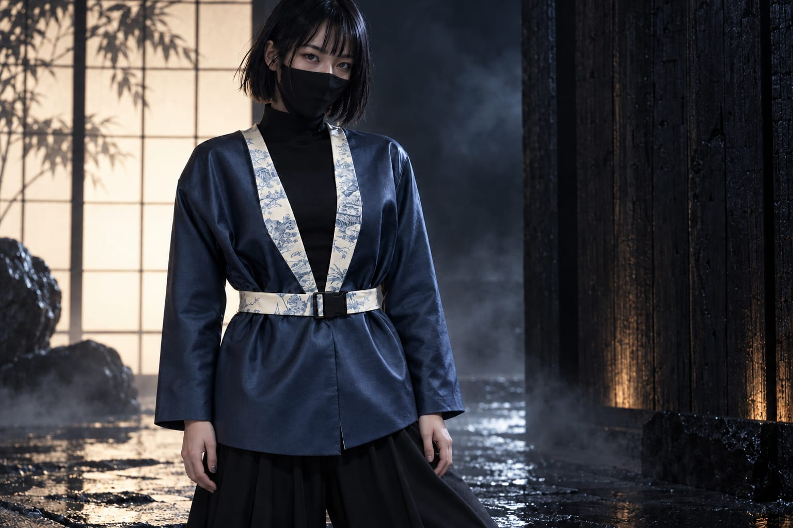
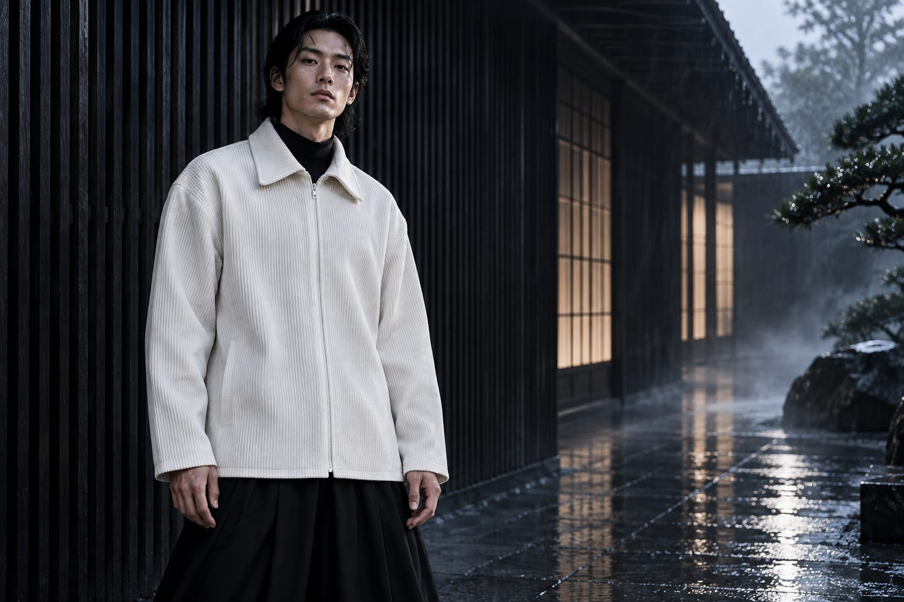
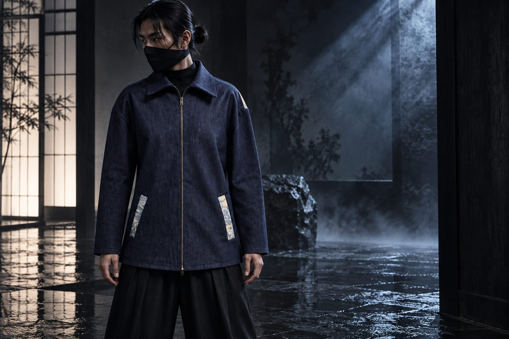

Les pièces
Une seule de chaque.
Trois pièces, cousues par Julia. Chacune existe en un seul exemplaire. Pour en savoir plus sur une pièce, écrivez-nous.
Rendus de campagne générés par IA à partir des pièces réelles, mannequins fictifs. Le stylisme noir (masque, sous-pull, pantalon) est généré, ce n’est pas une pièce AJ. À propos des visuels.

Veste bleue ceinturée
Bleu profond au reflet lustré, ceinture et parements en toile de Jouy crème et bleu.
Voir la pièce
Surchemise écrue côtelée
Longue et ample, zip central, dos entier en toile de Jouy gris sauge.
Voir la pièce
Veste indigo
Denim indigo, zip métal, poches bordées de toile de Jouy, dos entier beige et bleu.
Voir la pièce